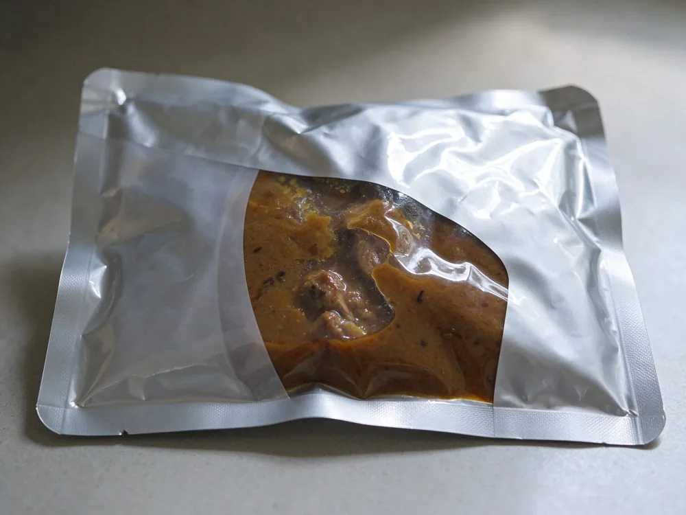

A retort pouch replaces the can, the glass jar and the tray for shelf-stable food. The pouch and its seal have to survive saturated steam sterilisation, so the film structure, the sealing layer and the fill procedure are designed together.

Sample shown for format reference only; any branding on the sample belongs to its respective owner. Production uses your own artwork and specifications.
Every format is set to your fill weight, sterilisation cycle and retort equipment. Specifications are confirmed before production.
Retort pouches are used where the product is filled, sealed and then cooked inside the pack. The heat treatment is what makes the food shelf stable without refrigeration, and it is also what limits which films can be used: the inner sealing layer must stay intact at the sterilisation temperature, and the whole laminate has to resist the pressure change as the retort cools.
In practice the structure follows the product. A sauce or a ready meal at 121°C usually works with a PET/AL/CPP laminate, aluminium foil carrying the oxygen barrier and cast polypropylene giving the seal. A product with sharp edges — bones in wet pet food, seafood shells, diced meat — needs a nylon layer for puncture resistance, which is why PET/NY/AL/CPP is common in pet food and ready meals. Very high temperature cycles around 135°C move the choice toward cast PP inner layers rated for the cycle, and the structure is tested rather than assumed.
Headspace matters as much as the film. Too little headspace and the pouch cannot expand during heating; too much and the pack looks loose on the shelf. We ask for the fill weight, the retort type (water immersion, steam air, spray) and the target cycle, then propose a structure and a seal width for your line. The seal is the weakest point of any retort pack, so seal width, seal temperature and contamination in the seal area are all specified with the structure rather than left to the filler.
Because retort work is process-critical, we keep the specification stable across repeat orders: the same laminate, the same seal layer and the same dimensions, so a validated process is not disturbed by a packaging change.
Structures are chosen against barrier needs, shelf life, filling method and the destination market.
Indicative ranges for planning. Final thickness, size and structure are confirmed per order.
| Formats | Flat three-side seal, stand-up, spouted and roll film |
|---|---|
| Typical Structures | PET/AL/CPP, PET/NY/AL/CPP, PET/AL/NY/CPP, PP-based all-plastic |
| Sterilisation | Cycles discussed per product; commonly 121°C, with 135°C structures requiring confirmation |
| Thickness | Structure-dependent; confirmed against the retort cycle and product load |
| Available Sizes | From small single-serve pouches to family and food-service formats |
| Printing | Digital printing for short runs and multiple designs; gravure for repeat volumes |
| Applications | Ready meals, sauces, soups, wet pet food, seafood, purees, baby food |
| Customization | Size, structure, seal width, opening feature, spout, printing |
Digital printing is used for new products, trial runs and multiple designs, because there is no cylinder cost per colour. Once the design is fixed and volumes settle, gravure printing becomes the cheaper route per pouch and holds colours consistently across repeat orders. Retort packs use inks and lacquers rated for the sterilisation cycle either way.
The workable minimum depends on the printing method rather than on a fixed number. Digital printing makes small trial quantities and several designs in one run practical, so a launch can be tested before committing to a large order. Gravure printing is set up around repeat volume. Send the pack size, fill weight, sterilisation cycle and expected annual volume and we will confirm the minimum for your specification.
The points buyers usually check before a first order.
It follows the structure. Common food retort cycles run at 121°C, and structures for higher cycles around 135°C exist but have to be confirmed against the product, the retort type and the process validation. We do not quote a temperature without the cycle details.
For many shelf-stable foods it can. The pouch uses less material, heats and cools faster because the pack is thin, and ships lighter. The trade-off is that the pack is more sensitive to handling damage, so the structure and the secondary packaging have to be right for the product.
Nylon adds puncture resistance and resistance to flex cracks. It matters for products with sharp edges such as bone-in pet food or seafood, and for packs that flex during the pressure change in the retort.
Yes. Spouted retort pouches are used for purees, soups and liquid foods where a controlled pour matters. The spout and cap have to be rated for the sterilisation cycle, so they are specified together with the film structure.
Yes. Production runs on your artwork and specifications. We confirm the dieline, seal area and print file before production so the artwork fits the pouch construction rather than being adjusted afterwards.
The most common retail flexible format, with zipper, window, valve or handle.
Stand-up or flat pouches with spout and cap for liquids and pastes.
Structures for dry kibble, treats and wet pet food packs.
How retort laminates are built and where each layer sits.
Send your fill weight, sterilisation cycle, retort type and annual volume — we will recommend a structure and quotation.